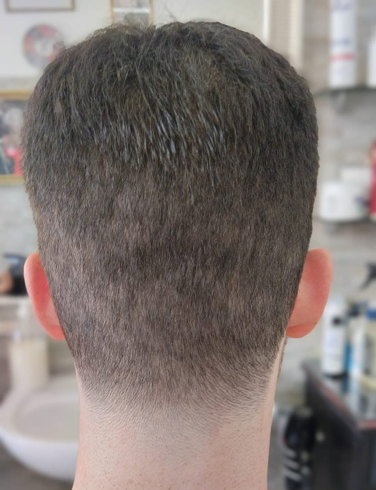

Adesso
Adesso e dopo.
«Il mio taglio lo noterai sia adesso che dopo.»
Barbiere in Largo Scalabrini dal 1966, bottega storica di Milano. Pettine e forbici, sfumature e barba, su appuntamento.
Dal martedì al sabato, su appuntamento
5,0 su Google · 165 recensioni 5,0 su Treatwell · 851 recensioni

adessodopo 3 settimane
Mezz'ora
Il taglio.
Su appuntamento, dal martedì al sabato. Tagli classici con pettine e forbici e tagli su misura: prima si guarda, si parla, e si decide insieme.
Capelli
- Taglio e shampoo30 min
- Taglio a secco senza bagnare i capelli15 min
- Taglio, shampoo e lozione curativa30 min
- Rasatura a macchinetta15 min
- Shampoo e piega15 min
Barba
- Modellatura barba a macchinetta o a forbice30 min
- Rasatura barba col rasoio15 min
- Rasatura e modellatura la barba modellata a forbice30 min
Tutto insieme, e per i più piccoli
- Taglio, shampoo e barba45 min
- Taglio bimbo da 0 a 5 anni30 min
Le durate sono quelle della loro pagina di prenotazione.
Tre settimane
E dopo.
Un taglio si guarda il giorno stesso, allo specchio. Ma si vede davvero quando ricresce.
«Mimmo mi aveva detto una cosa che mi ha incuriosito: “Il mio taglio lo noterai sia adesso che dopo". E aveva ragione. A distanza di giorni, il taglio continua a mantenere forma e struttura in modo impeccabile. I capelli ricrescono in maniera uniforme, naturale […]»
- oggi+0 mm
- 1 settimana+2,1 mm
- 2 settimane+4,2 mm
- 3 settimane+6,3 mm
- 4 settimane+8,4 mm
I capelli crescono di circa 0,3 millimetri al giorno, più o meno un centimetro al mese. Crescono tutti della stessa misura: in cima come sulla nuca. Per questo la forma che ti dà il taglio è la forma che ricresce.
Se la sfumatura è fatta bene, dopo tre settimane è ancora lì, solo più lunga di 6 millimetri. Poi, quando è ora, si torna da Mimmo.
La crescita dei capelli: Wikipedia, «Capelli».
Vent'anni
Come sempre.
È la frase che torna nelle recensioni: «come sempre» sta in 65 delle 711 recensioni scritte su Treatwell dal 2023 a oggi. C'è chi viene da vent'anni, chi da trenta, chi porta i figli.
5,0 su Google, 165 recensioni
5,0 su Treatwell, 851 recensioni verificate
-
«Sono cliente di Mimmo da una trentina di anni e mi sono trovato sempre bene. È competente, cordiale, sempre attento alle esigenze del cliente. Per me ormai è un amico, non solo il mio barbiere di fiducia»
Nicola Gigantiello · Treatwell · ottobre 2023
-
«Ambiente molto accogliente e pulito. Frequento questo saloon ormai da 20 anni e non mi farei tagliere i capelli da nessun’altro parrucchiere. Mimmo è unico. Lo consiglio vivamente a tutti.»
Mauri S · Google
-
«Mimmo è un professionista con molta esperienza e i risultati si vedono. I capelli anche a distanza di tempo tra un taglio e l'altro restano ordinati anche se sensibilmente più lunghi.»
Emanuele · Treatwell · febbraio 2024
-
«[…] Non posso far altro che confermare quanto di buono è già stato detto su Mimmo: un mix perfetto tra un barbiere "vecchia scuola" che, però, ha saputo adattarsi ai cambiamenti imposti dai tempi moderni. Qualificato, attento ai dettagli... e pure simpatico! :)»
Gabriele · Treatwell · giugno 2025
-
«Frequento Mimmo ormai da diversi anni, mi sono sempre trovato bene tanto da continuare a frequentarlo anche dopo aver cambiato zona. Ormai Mimmo mi conosce e sa che taglio desidero, il suo è uno dei pochi posti dove posso chiedere “il solito” ed essere tranquillo. […]»
Stefano D. · Treatwell · maggio 2023
Dalle recensioni su Google e su Treatwell, come sono state scritte. Leggile tutte su Treatwell →
Sessant'anni
Bottega storica.
In Largo Scalabrini c'è un barbiere dal 1966. Il Comune di Milano lo ha iscritto fra le botteghe storiche della città.
Mimmo, Domenico Lorusso, lo porta avanti dal 9 gennaio 2001. Nel giorno dell'anniversario ha scritto ai clienti: «25 anni di attività + 35 della gestione precedente». Nel marzo 2025 il premio, a Palazzo Marino.
Dentro, le poltrone da barbiere rosse e bianche, gli specchi con la cornice d'oro, il muro di mattoni, e sulle pareti i ritratti in bianco e nero dei grandi attori.
«La Creatività, la Fantasia la Passione e il Cuore, sono le migliori terapie che abbia mai sperimentato per rendere felice una persona.»
- Albo delle botteghe storiche
- Comune di Milano, n. 519
- Barbiere dal
- 1966
- Mimmo dal
- 2001
E adesso?
Si prenota.
Si riceve su appuntamento. Si prenota online su Treatwell, oppure si chiama.
| Martedì | 8:30–12:30 · 14:30–19:30 |
|---|---|
| Mercoledì | 8:30–12:30 · 14:30–19:30 |
| Giovedì | 8:30–12:30 · 14:30–19:30 |
| Venerdì | 8:30–12:30 · 14:30–19:30 |
| Sabato | 8:30–19:30 |
| Domenica | chiuso |
| Lunedì | chiuso |
- Indirizzo
- Largo Giovanni Battista Scalabrini 6, 20146 Milano
- Come arrivare
- M4 Gelsomini; il tram di via Giambellino, i bus di via Lorenteggio
- Telefono
- 02 471262
- Cellulare
- 333 293 8038
- Instagram · Facebook
- @saloon_uomo_damimmo · Saloon Linea Uomo